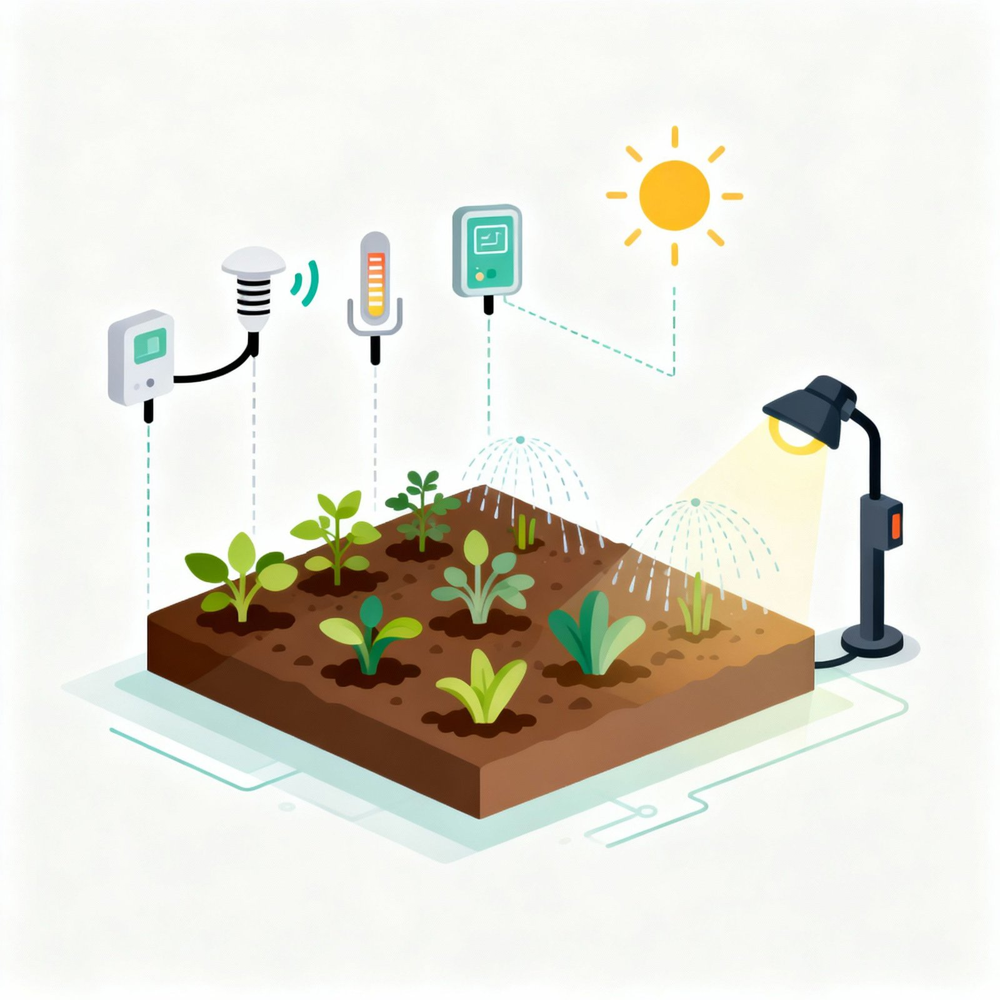
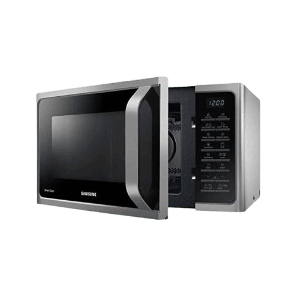
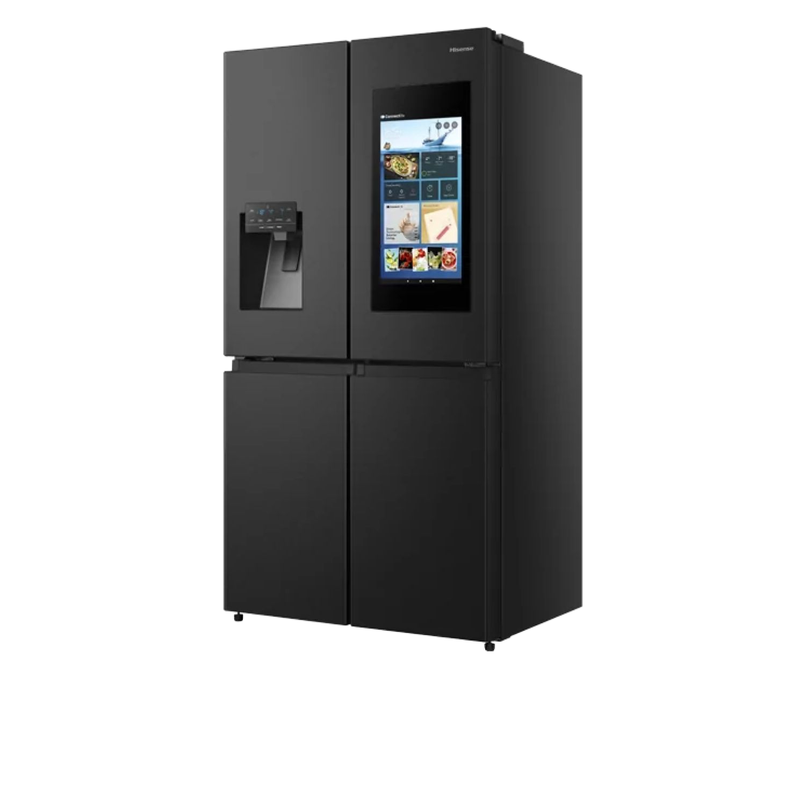
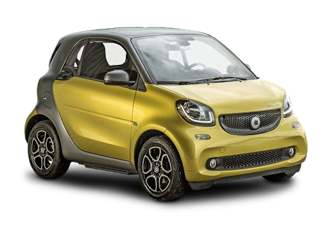
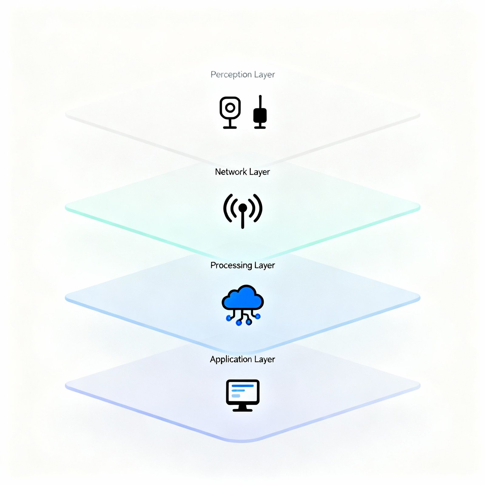
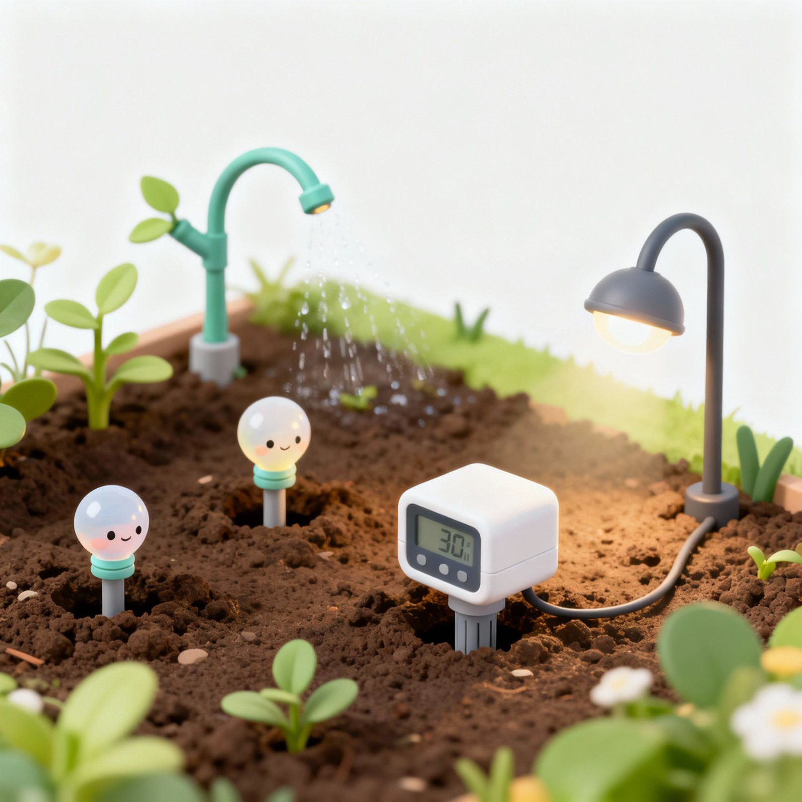
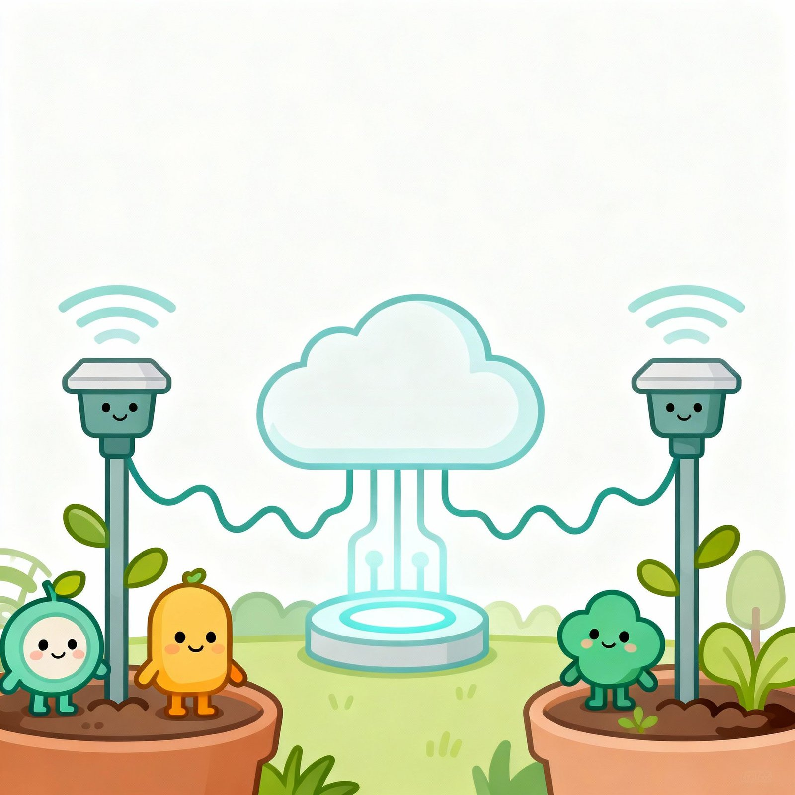
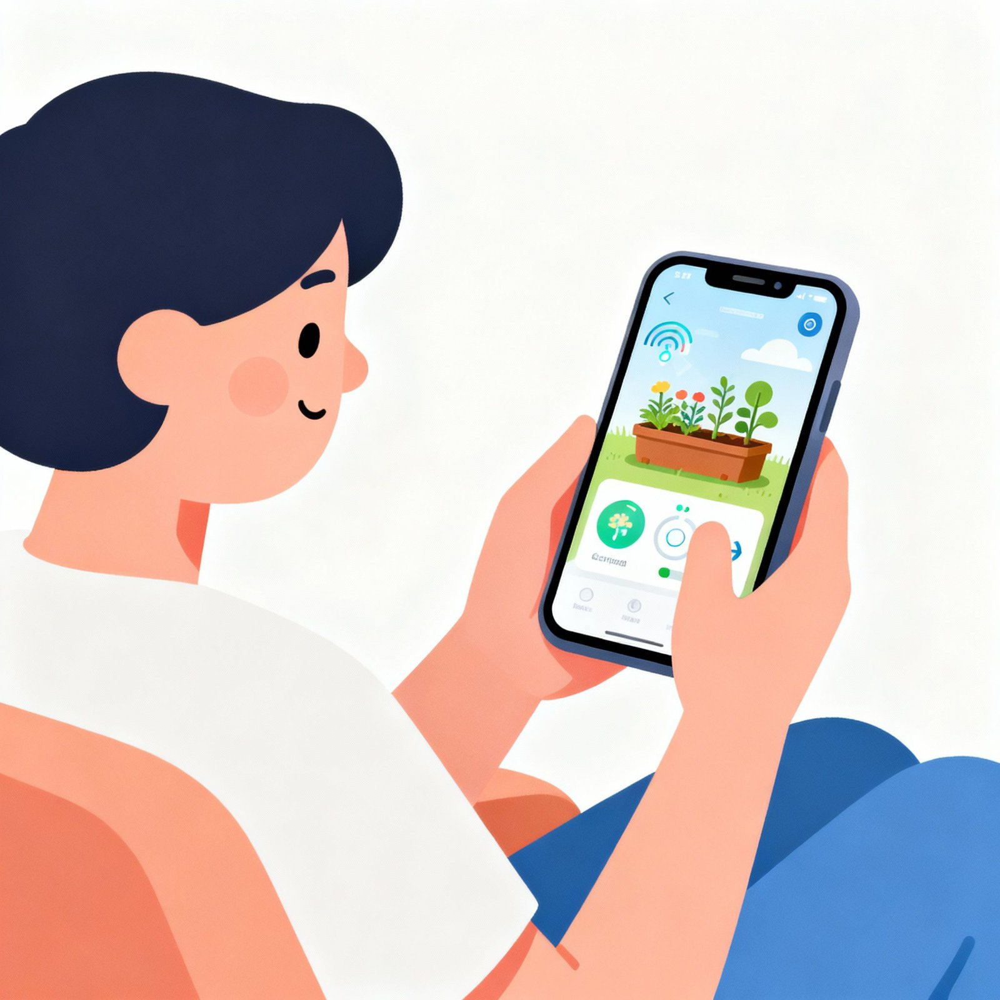
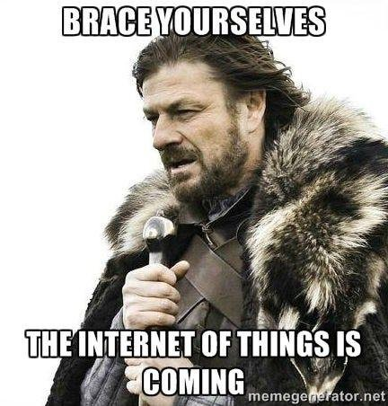

Kick Off (60 mins)
Andrea Magazzini
Internet of Things
By Capstone you ship: flow diagram · MakeCode · Thunkable dashboard
Share an emoji in the chat
This challenge is brought to you by…
Challenge Owner
Andrea Magazzini
Senior Full Stack Engineer
Double MSc in Advanced Robotics
Zurich / Genova / World
Tutor
Georg Bollweg
Internet of Things
Dry soil → moisture sensor → network → decision → pump → phone alert. We’ll reuse this example all session.




It can operate intelligently without any internet or network connection.
It has embedded cellular or Wi‑Fi connectivity
It acts as a hub to monitor and control other connected devices.
Internet of Things
Perception → Network → Processing → Application. Map each back to the smart garden.

Internet of Things

micro:bit · sensors & actuators

Connect · how data travels
MakeCode · rules & logic

Thunkable · control dashboard
Demo · 2–3 min · sensor → board → app tile
Think about smart things
Team up and make an IoT solution
Which smart object can you connect?
Think about smart devices — how would you connect them to simplify everyday life?
What is one problem you could solve through IoT?
10 mins

Leave this up
What friction? Who feels it?
What physical signal will you measure?
What happens in the world, under which rule?
What does the user see or override on the phone?
Example: travelling → soil moisture → valve if dry → live % + manual water
Three teams · ~45 seconds each
Where is Perception? What’s the user value?
Internet of Things
Kick-Off → explore → discussion → reflection → capstone
Internet of Things
| Artifact | Good | Great |
|---|---|---|
| Flow diagram | All 4 layers labeled; clear sense→decide→act path | Failure states, thresholds, user overrides |
| MakeCode | Sensor + rule + actuator working | Explicit test cases, readable names |
| Thunkable | Live state + one control action | A classmate can use it without help |
Full assessment criteria live in the App.
Wrap-Up
#-chl-internet-of-things · Draft your flow tonight